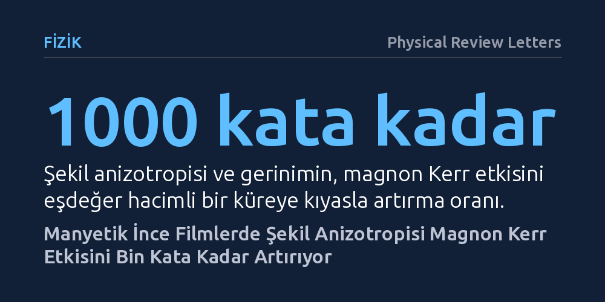

FIZIK · Physical Review Letters · 2026-10-14
Hibrit magnon-foton sistemlerinde doğrusal olmayan etkileri artırmak amacıyla mikrodalga rezonatörüne bağlı manyetik ince filmler incelendi. Araştırmacılar, şekil anizotropisi ve gerinimin magnon Kerr etkisini küresel yapılara kıyasla bin kata kadar güçlendirdiğini ve manyetizasyon yönüyle etkinin kesintisiz ayarlanabildiğini gösterdi.
Manyetik sistemlerde kuantum durumlarını denetlemek ve frekans dönüştürmek için gereken doğrusal olmayan etkilerin, hantal kristal küreler yerine çip ölçeğindeki ince filmlerde çok daha güçlü biçimde üretilebileceğini gösteriyor.

Günümüz kuantum ve mikrodalga teknolojilerinde bilgiyi farklı fiziksel taşıyıcılar arasında aktarmak temel bir gerekliliktir. Bu alanda öne çıkan yaklaşımlardan biri, manyetik malzemelerdeki spin dalgalarının (magnonlar) mikrodalga fotonlarıyla eşleştirilmesidir. Ancak bu hibrit sistemlerin pratik olarak kontrol edilebilmesi, frekans dönüştürme ve kuantum bilgi işleme gibi işlevlerin yürütülebilmesi için sistemin doğrusal olmayan tepkiler vermesi gerekir. Bu doğrusal olmayan davranışların başında ise uyarılma yoğunluğuna bağlı olarak rezonans frekansının değişmesini tanımlayan magnon Kerr etkisi gelir.
Geleneksel çalışmalarda bu etkiyi gözlemlemek için genellikle milimetre ölçeğinde, küre biçiminde yitriyum demir granat kristalleri kullanılıyordu. Ne var ki küresel geometrilerde manyetik özellikler her yönde neredeyse aynı davrandığı için doğrusal olmayan etkiler zayıf kalıyordu. Üstelik bu hantal küreleri modern mikroelektronik çiplere entegre etmek ve manyetik etkileşimleri esnek biçimde kontrol etmek oldukça güçtü. Araştırmacılar, bu zayıf etkinin çip ölçeğine uygun düzlemsel ince filmler kullanılarak güçlendirilip güçlendirilemeyeceğini ve harici kontrollerle istenen şekilde yönlendirilip yönlendirilemeyeceğini araştırdı.
Araştırma ekibi bu soruyu yanıtlamak için hacimli küreler yerine manyetik özellikleri yöne göre değişen demir granat ince filmleri tercih etti. İnce film geometrisi, manyetizasyonun film düzleminde veya dik eksende farklı zorluklarla yönlenmesine yol açan güçlü bir şekil anizotropisi yaratır. Ekip, bu geometrik etkiyi filmin büyütülmesi sırasında oluşan kristal gerinimiyle birleştirdi. Böylece malzemenin manyetik tepkisinde küresel yapılara kıyasla çok daha belirgin bir yön bağımlılığı oluşturuldu.
Hazırlanan manyetik ince film, halka aralıklı rezonatör adı verilen özel bir mikrodalga kovuğu ile güçlü bir şekilde eşleştirildi. Mikrodalga kovuğu, elektromanyetik dalgaları küçük bir hacimde hapsederek fotonlar ile filmdeki magnonlar arasında güçlü bir bağ kurulmasını sağladı. Bu düzenek sayesinde araştırmacılar, filmin içindeki manyetizasyon dinamiklerini ve frekans kaymalarını yüksek hassasiyetle laboratuvar ortamında doğrudan ölçtü.
Ölçümler sırasında harici manyetik alanın yönü adım adım değiştirildi. Manyetizasyonun film düzlemine göre aldığı farklı açılarda sistemin mikrodalga rezonans frekansındaki kaymalar kaydedildi ve elde edilen spektroskopi verileri teorik modelleme sonuçlarıyla karşılaştırıldı.
Deney sonuçları, ince film geometrisinin sağladığı güçlü şekil anizotropisi ile kristal geriniminin bir araya gelmesiyle magnon Kerr etkisinin belirgin biçimde güçlendiğini gösterdi. Ölçülen etki, aynı hacme sahip geleneksel bir manyetik küre ile kıyaslandığında 3 büyüklük mertebesine, yani 1000 kata kadar daha yüksek çıktı. Bu artış, mikrodalga fotonlarıyla magnonlar arasındaki doğrusal olmayan bağın mikroskobik boyutlarda çok daha az enerjiyle oluşturulabileceğini kanıtladı.
Çalışmanın bir diğer bulgusu ise etkinin yönlendirilebilirliği oldu. Manyetizasyonun statik yönü kontrol edildiğinde, Kerr frekans kaymasının hem büyüklüğünün hem de işaretinin (pozitif veya negatif yönde) kesintisiz biçimde ayarlanabildiği gözlemlendi. Malzemenin manyetik kutuplanması belirli açılara getirildiğinde frekans yukarı doğru kayarken, başka açılarda aşağı doğru kayıyordu.
Elde edilen deneysel verilerin teorik hesaplamalarla tam bir uyum içinde olduğu görüldü. Üstelik araştırmacılar, Kerr etkisindeki bu artışa ulaşırken fotonlar ve manyetik dalgalar arasındaki uyumlu etkileşimin korunduğunu saptadı. Bu durum, sistemin kararlılığını yitirmeden doğrusal olmayan etkileşimler sergileyebildiğini gösterdi.
Bu bulgular, kovuk manyoniği alanında hantal kristal küre bağımlılığını aşmak adına somut bir yöntem sunuyor. Geleneksel kürelerin aksine ince filmler, yarı iletken ve mikrodalga devre üretim süreçleriyle uyumlu düzlemsel bir mimariye sahiptir. Doğrusal olmayan etkilerin film geometrisi sayesinde bin kat kuvvetlendirilmesi, gelecekte kuantum durumlarının kontrolü ve mikrodalga sinyallerinin frekans dönüşümü gibi işlemleri çip ölçeğinde mümkün kılabilir.
Bununla birlikte, elde edilen bulguların laboratuvar ortamındaki tekil bir malzeme bileşimi ve rezonatör tasarımıyla sınırlı olduğu göz önünde bulundurulmalıdır. Sistemin pratik kuantum devrelerine veya karmaşık mikrodalga aygıtlarına entegre edilebilmesi için farklı sıcaklık ve frekans koşullarındaki davranışlarının da bağımsız deneylerle incelenmesi gerekmektedir. Yine de çalışma, manyetik filmlerdeki geometrik tasarımın manyetik dalga dinamiklerini kontrol etmede güçlü bir mekanizma sunduğunu ortaya koymaktadır.